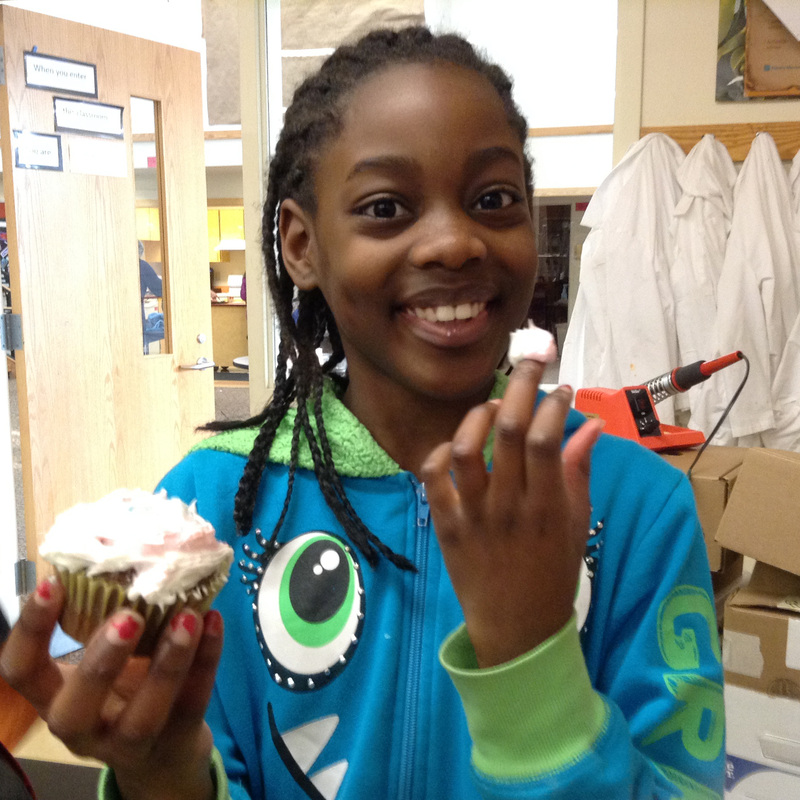
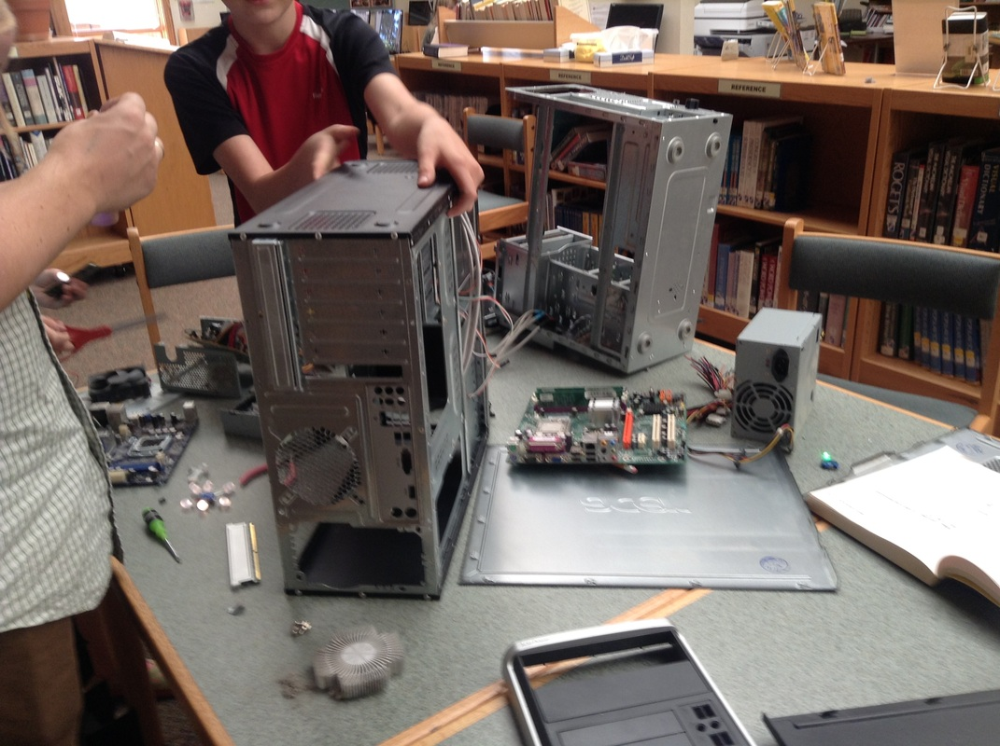

About
What Makes a Maker?
"Makers believe that if you can imagine it, you can make it. We see ourselves as more than consumers—we are productive; we are creative. Everyone is a Maker, and our world is what we make it.
Makers seek out opportunities to learn to do new things, especially through hands-on, DIY (do-it-yourself) interactions.
Makers surprise and delight those who see their projects, even though the projects can be a bit rough-edged, messy and, at times, over-stimulating. (Think punk rock.)
Makers comprise a community of creative and technical people that help one another do better. They are open, inclusive, encouraging and generous in spirit.
Makers are generally not in it for the money. This isn’t about filing patents or making a profit. At the same time, we’re not anti-commercial—Makers sometimes start businesses, and we celebrate that…but we don’t make it a focus as it would change the spirit of the movement.
Makers celebrate other Makers — what they make, how they make it and the enthusiasm and passion that drives them.
The typical project made by a Maker does not provide a platform for politics or religion."
From Maker Club Playbook, pg.5. Spring 2012
What is a Makerspace?
A Makerspace is a place where we explore the creation, design, and engineering process using found or acquired materials to create new ideas or modify existing ones. We use materials and tools such as sugru, instamorph, makey makey, yarn, wire, paint, glue, fabric, and LEDs to make cool things.
What is the DS Maker Community?
DS Makers is a community of makers who share our knowledge, tools, ideas, and creativity.
Makerspace Sessions 2013-2014
We will be providing a Middle School Makerspace this year. The Makerspace will be on Fridays until 5:00pm. Please bring your own snacks. Some materials will be provided but we hope to upcycle and use materials our makers already have whenever possible.
Makerspace Sessions
Session 1: Nov. 1, Nov. 8, Nov. 15, Dec. 6, Dec. 13. Jan. 10, Jan. 24, Jan. 31, Feb. 7, and Feb. 21. Session 2 : Feb. 28, Mar. 7, Mar. 14, Mar. 28, Apr. 4. Apr. 25, May 2, May 9, May 16, and May 30.
Questions? Please contact Katie Christo.
Makers
Photos
Makers
 |
 |
|
 |
||
 |
||
|  | ||
 |
 |
||
 |
||
|  |